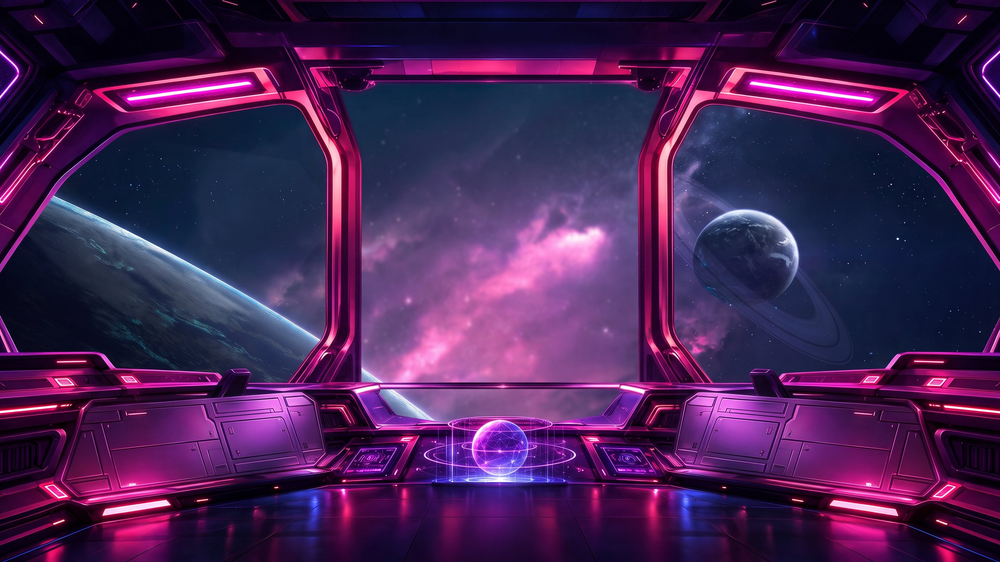

MENU
Home
About
Events
Creative Hub
Partners
Gallery
Contact
Join the universe

Flux Creative Universe
Explore our universe
SCROLL
Section berikutnya
Mulai dari sini, lanjutkan dengan konten About, Events, dan seterusnya.